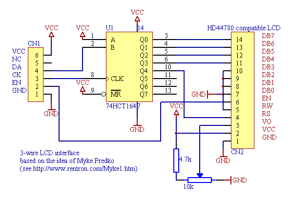
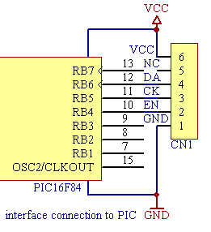

version 2
based on the idea of Myke Predko
If you are developing applications for the PIC, and miss the costly debugging tools, or can't afford a parallel LCD interface in your design, this serial interface can help printing debug messages and/or reduce the pin count. This version uses a Hitachi HD44780 compatible LCD module in 4-bit mode. The interface is based on the idea of Myke Predko. See this link for more details.
My default PIC pins for the interface connection are RB4 (EN), RB5 (CK), RB6 (DA). I choose these pins due to PCB layout simplicity on the 18 pin devices. It is the task of your application to correctly initialize the TRIS bits of the used port pins!
| LCD library (001) source for the PIC16F84 | lcdlib.asm |
| LCD library header file for linked projects | lcdlib.inc |
| example program | lcdtest.asm |
| HD44780 LCD controller datasheet | hd44780.pdf |
 